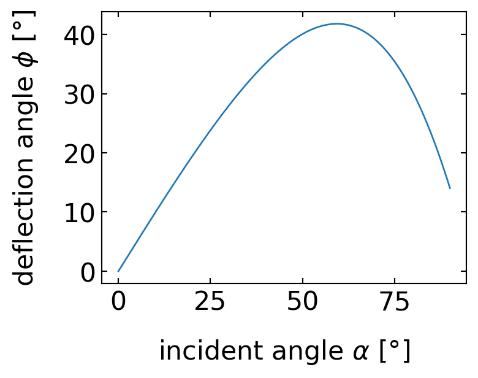
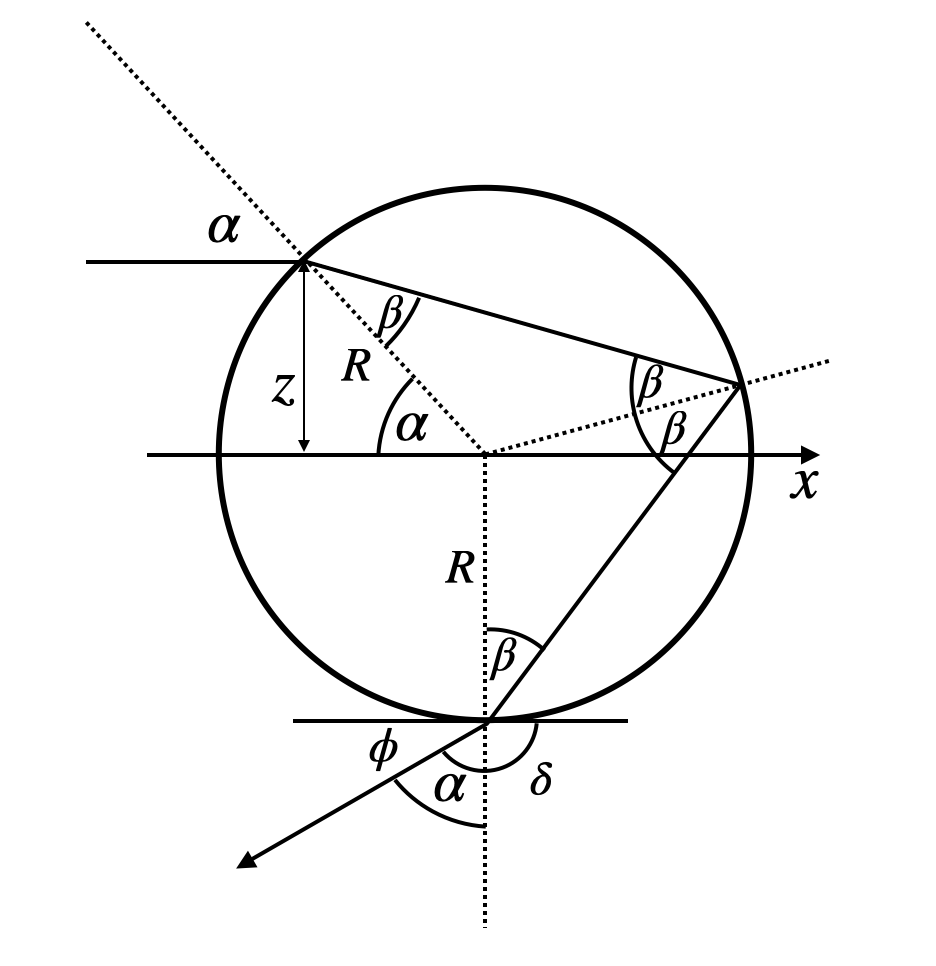
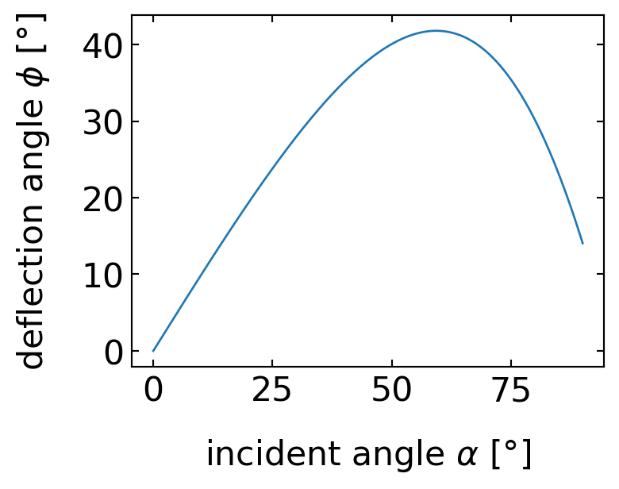
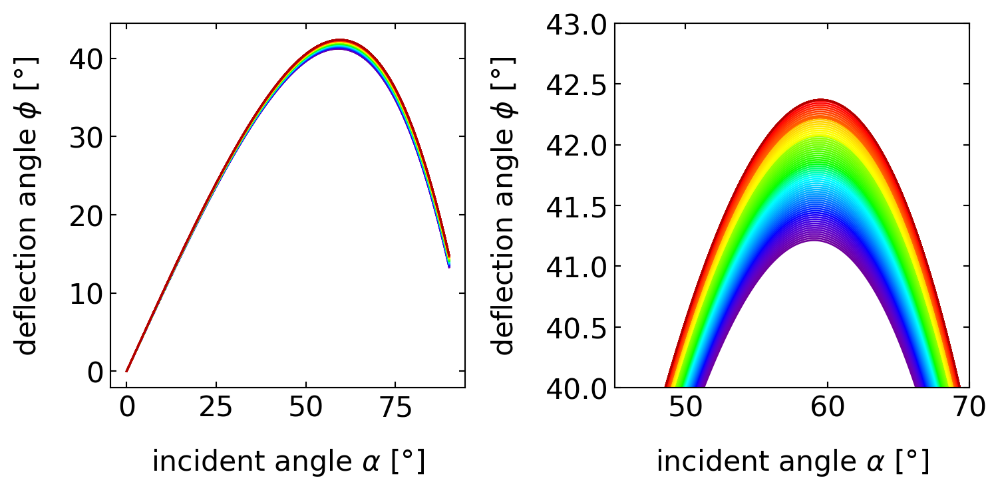
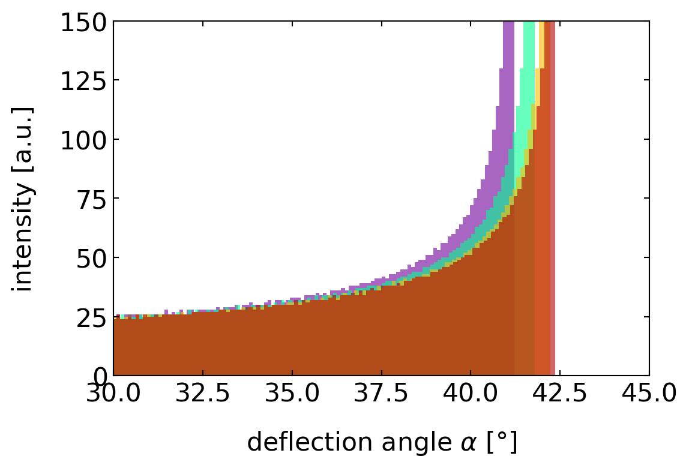
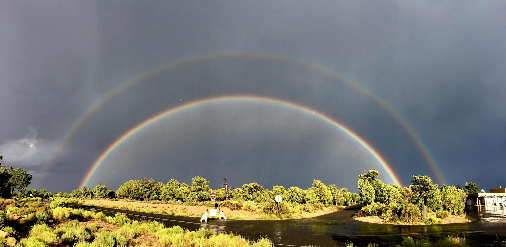

H2O.csv.As the last topic of the optical elements we would like to have a look at a phenomenon, which has nothing to do with optical elements but is fun and just fits to the topic of dispersion. We will explore the rainbow and in addition a DIY version, the glassbow.
The rainbow has fascinated humans throughout history, but its first scientific explanation came from René Descartes in 1637. Using geometric optics, he explained how sunlight is reflected and refracted by spherical water droplets to create the bow shape. However, Descartes could not explain the colors. It was Isaac Newton who, through his experiments with prisms and understanding of dispersion, provided the complete explanation of the rainbow’s colors in 1672. Newton showed that white sunlight consists of different colors that are refracted at slightly different angles due to dispersion.
To understand the rainbow we will have first a look at the reflection of rays from a single droplet.

In the sketch above a light ray of white light is entering the droplet under an angle \(\alpha\) to the surface normal on the top. The ray is refracted and enters the droplet under an angle \(\beta\) to the surface normal. The angle can be calculated from Snell’s law
\[n_{\rm air}\sin(\alpha)=n_{\rm water}\sin(\beta).\]
Inside the droplet, the ray is now hitting the water/air surface at the backside from which it gets reflected. There, the incident angle is also \(\beta\) and the ray is reflected under an angle \(\beta\) as well. At that point, most of the light will, however, exit the drop on the backside, so that only a small fraction is reflected and traveling further to hit a second time the water/air surface at the angle \(\beta\). The light refracted out at that point leaves the droplet under an angle \(\alpha\) with the surface normal due to the reversiblity of the light path. We are, however, interested in the angle \(\phi\) that the ray makes with the incident direction.
This angle \(\phi\) can be calculated from the above sketch to be
\[\phi=4\beta-2\alpha.\]
Since
\[\beta=\sin^{-1}\left (\frac{n_{\rm air}}{n_{\rm water}}\sin(\alpha) \right)\]
such that finally
\[\phi=4\sin^{-1}\left (\frac{n_{\rm air}}{n_{\rm water}}\sin(\alpha) \right)-2\alpha\]
So let us have a look at this dependence of the deflection angle as a function of the incidence angle.

H2O.csv.The dependence seems to show a maximum deflection angle at an incidence angle of around \(\alpha=60^{\circ}\). This is an important finding, as the whole appearance of the rainbow depends on that.
Maximum deflection angle 41.78815648670841The color of the rainbow is the result of the fact that the maximum deflection angle depends on the color of the light due to the dispersion. Since we have a refraction, reflection and another refraction, the largest maximum deflection angle is observed for red light, while the smallest one appears for blue light. The diagrams below show this result, which is in general true for materials with normal dispersion.

This order of the colors is actually true for all incident angles, which raises the question, why the rainbow is actually colored. The blue color of a certain incidence angle would actually overlap with the green color of a different incidence angle and the red color of an even different incidence angle. If you select a specific outgoing angle under which you observe the rainbow, let us say \(41^{\circ}\), then you find under this observation angle all color and, therefore, should observe always white light.
This is actually true if you look at the inside of a rainbow. You clearly recognize that inside the rainbow it is much brighter than outside. Yet when you reach the maximum angle of each color, you have a region, where even for larger angles for the incidence angles, the deflection angle does not change. Thus, if you assume you send in rays at constantly spaced incidence angles, you will have more rays with a deflection angle close to the maximum. The diagram below just counts the number of deflection angles in the different for each color and you clearly see that around the maximum deflection angles for each color you have a strong peak.

H2O.csv.Thus, around each droplet on the sky, there is a cone of deflected light reflected back from the sun. On the outside of that cone is red light under an angle of almost \(42^{\circ}\) while on the inside edge we find blue light and finally white light (see left image below). We just have to connect that to the observer now. This is shown in the right sketch. The rainbow, therefore, results from the fact that we look at different height at different edges of the cone.
The photos below show a remarkable example of both primary and secondary rainbows. Between these two bows, a careful observer will notice a darker region known as Alexander’s dark band, first described by Alexander of Aphrodisias in 200 AD. This dark band occurs because no light is scattered back to the observer at angles between approximately \(42^{\circ}\) (maximum angle of primary rainbow) and \(50^{\circ}\) (minimum angle of secondary rainbow).

The primary rainbow results from one internal reflection within each water droplet, while the secondary rainbow involves two internal reflections. This double reflection explains both the reversed color order and the reduced brightness of the secondary rainbow, as each reflection decreases the light intensity.

A beatiful demonstration of rainbow physics can be created at home using glass beads of about \(200\, \mu m\) diameter (available from our lab). When these beads are placed on a black background and illuminated with a flash lamp, they create what we call a “glassbow” - a rainbow-like pattern produced by glass instead of water droplets.
The main difference between a glassbow and a natural rainbow lies in the observation angle, due to the different refractive index of glass (\(n \approx 1.5\)) compared to water (\(n \approx 1.33\)). Using the same deflection angle equation:
\[ \phi=4\sin^{-1}\left (\frac{n_{\rm air}}{n_{\rm glass}}\sin(\alpha) \right)-2\alpha \]
we can calculate why the glassbow appears at a different angle than its atmospheric counterpart.